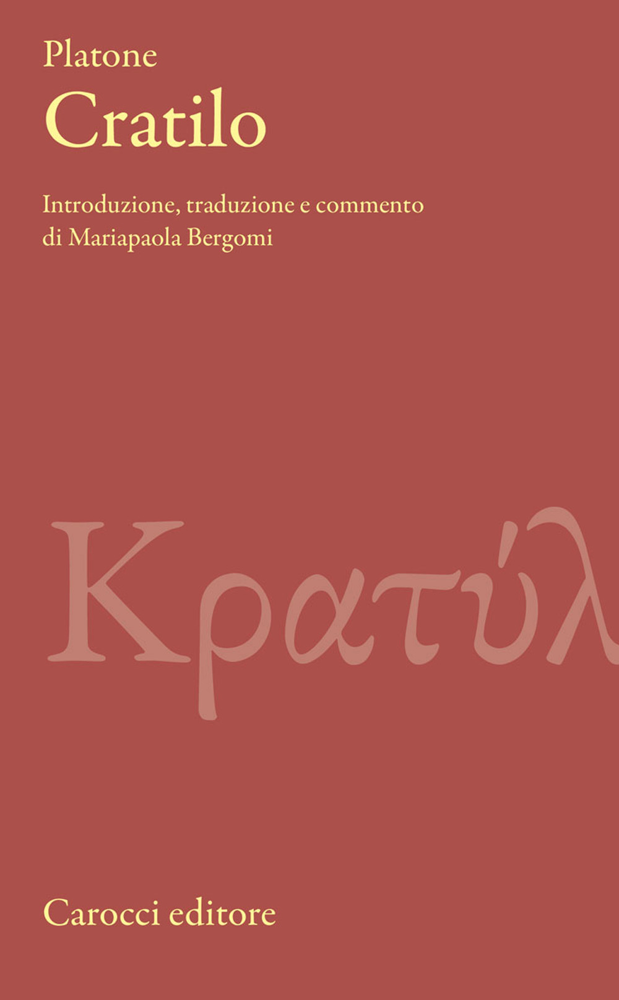

10:20 · 2 OPERE
La catastrofe prodotta dalla pseudoscienza.
Il filo del discorso
Dr Divago critica l’intreccio fra comunicazione scientifica, politica e media, sostenendo che una fiducia imposta possa favorire reazioni irrazionali e teorie del complotto. Un passo del Cratilo introduce il contrasto fra rumore delle opinioni e ricerca del sapere. Il discorso passa poi al metodo sperimentale, al criterio di semplicità associato a Occam e all’esempio investigativo di Sherlock Holmes. La conclusione chiede di giudicare le affermazioni attraverso i loro riscontri, dentro una lettura fortemente polemica della gestione della pandemia.
I libri nel discorso

Cratilo
Copertina: Carocci · 2022
Copertina autentica controllata visivamente. Edizione di riferimento; non identifica l’esemplare usato o citato nel video.
Platone e il titolo del dialogo sono annunciati prima della citazione.
Passaggio 4:46 ↗ · Fonti e libro ↗
Vangelo secondo Matteo
Identificazione probabile
Copertina del volume completo: San Paolo, 2014 · Nuova Versione dai Testi Antichi · edizione di riferimento
Vangelo secondo Matteo è un libro della Bibbia. L’immagine mostra il volume completo San Paolo di riferimento, non un’edizione autonoma del singolo libro e non una versione identificata nella citazione.
Richiamo alla formula evangelica sui frutti, riconducibile a Matteo 7,16; capitolo non chiaramente annunciato.
Passaggio 9:54 ↗ · Fonti e libro ↗